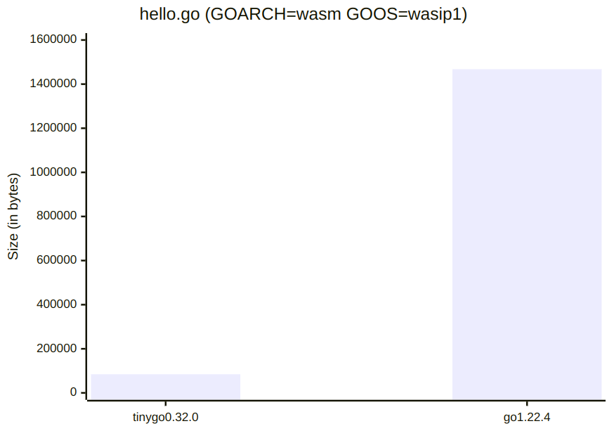

A Small Update On TinyGo
Gophercon.EU 2024 Edition
Ron Evans - @deadprogram
Ron Evans (@deadprogram)
Technologist For Hire
hybridgroup.com
Software that makes your hardware work
tinygo.org
Go compiler for small places
Current stats
14k+ stars
850+ forks
200+ contributors
Over 100 different boards supported
Over 100 different sensors/displays/wireless devices/actuators supported
TinyGo Release 0.32 Highlights
LLVM 18
Patch for race condition in Big Go 'go/ssa' package
Bluetooth support for the RP2040-W
More WASM improvments
Weighing In
Binary sizes for latest "Big Go" (1.22.4) and TinyGo (0.32)
package main
func main() {
println("Hello world!")
}
hello.go
1467672 jun 16 10:03 hello-min-go-1.22.4.wasm
84696 jun 16 19:31 hello-min-tinygo-0.32.0.wasm

17x smaller
package main
import (
"fmt"
"io/ioutil"
)
func main() {
fmt.Println("Hello world!")
helloWorldAsBytes := []byte("Hello world!\n")
err := ioutil.WriteFile("./helloworld.txt", helloWorldAsBytes, 0644)
if err != nil {
panic(err)
}
}
hello-wasi.go
wasmbyexample.dev
2237624 jun 16 10:11 hello-wasi-go-1.22.4.wasm
412403 jun 16 19:30 hello-wasi-tinygo-0.32.0.wasm
5.4x smaller
New Ways To Explore TinyGo
TinyGo Playground
play.tinygo.org
TinyGo Tour
tinygo.org/tour
TinyGo in the world
TinyGo - Petit Mais Costaud
Aurélie Vache (@aurelievache) & Thierry Chantier (@titimoby)
Touraine Tech - Feb 2024 - Tours, France
TinyGo Keyboard
Takasago (@sago35)
github.com/sago35/tinygo-keyboard
Go Conference 2024 - Jun 2024 - Shibuya, Japan
gocon.jp/2024/
TinyGo Cosmic Unicorn
Gustav Westling (@zegl)
github.com/zegl/go-cosmic-unicorn
TinyGo in official Raspberry Pi Pico SDK
Patricio Wittingslow (@soypat) & Ken Bell (@kenbell)
github.com/raspberrypi/pico-sdk/pull/1604
github.com/tinygo-org/pio
Webassembly
wasm, wasi, and wasm-unknown
Compute@Edge Go SDK
Serverless web platform
github.com/fastly/compute-sdk-go
Spin 2.0 + SpinKube
Serverless web platform + Kubernetes execution platform
developer.fermyon.com
Trivy
Security scanner
aquasecurity.github.io/trivy
Tetrate Labs
Webassembly runtime engine
wazero.io
Mechanoid
Webassembly on embedded devices
mechanoid.io